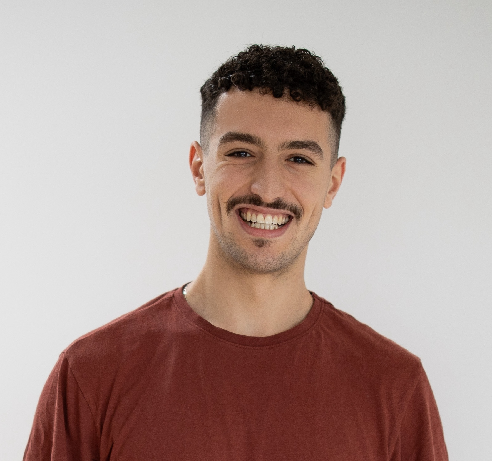

I bridge the gap between state-of-the-art research and hardware-aware implementation. Currently a Master's student at the University of Hamburg, focusing on Unsupervised Self-Calibration in Language Models. Previously engineered efficient pipelines for Pharos Labs and AdaLab, scaling systems to 100k+ users.

Engineered a custom "T5-Efficient" Transformer for resource-constrained devices.